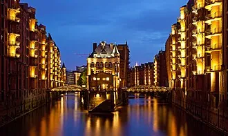
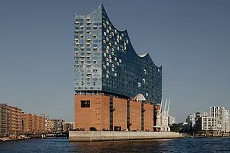

Speicherstadt · UNESCOThree angles converge on a single date math. Pick the weekend first, then the room, then the ferry.
Hamburg has exactly four 2★/3★ rooms in the active guide[1]. Haerlin is dark 19 Jul–16 Aug & 18–26 Oct 2026[2]. The Table sells its 20-seat counter ~3 months out, same day[3]. Don't book bianc — closed 31 Dec 2025[4].
ITCS Fri free with a 16:00 after-party[5], Product at Heart Fri at Kampnagel[6], CollabDays Sat free[7]. Saturday afternoon ends in time for evening dinner.
Three of four ★ rooms sit on the HafenCity / Binnenalster axis — walkable from the Elbphilharmonie Plaza and the Speicherstadt UNESCO ring[14]. Lakeside is the outlier on the Außenalster[16] — pair it with the 7.4 km Sunday loop[17].
Three stars, classic-leaning, lake-side window, smart casual — and the only one of the four 3★ rooms that's both *bookable* <10 weeks out AND comfortably outside the summer closure[2].
→ book 6–8 weeks ahead. Dress: jacket, no tie.

★★★Contemporary art hall is closed until 5 Jun 2026. Late-May trips can't see it.[18]
The 837th harbour birthday already ran 8–10 May 2026. Substitute the free 10pm Wasserlichtspiele.[19]
100/200's Die Saison rotation runs fully vegetarian[23] and re-centres the weekend on Rothenburgsort and the gallery-level Glorie carte. Demote the Alster walk in favour of the Övelgönne–Teufelsbrück Elbe-beach stroll[24].